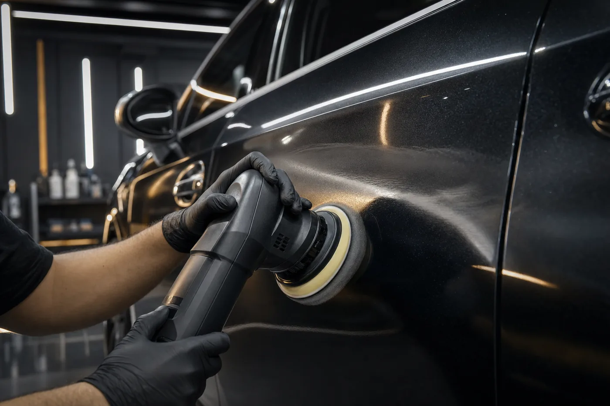
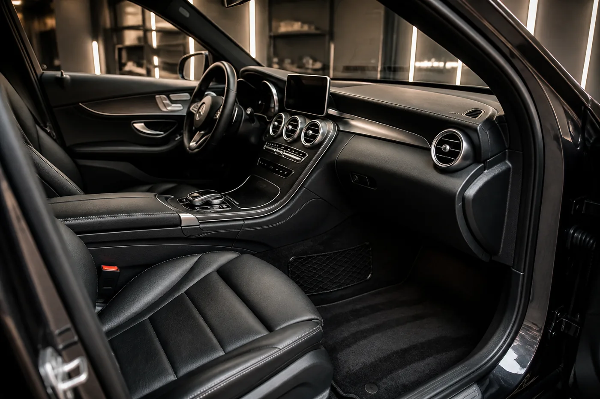
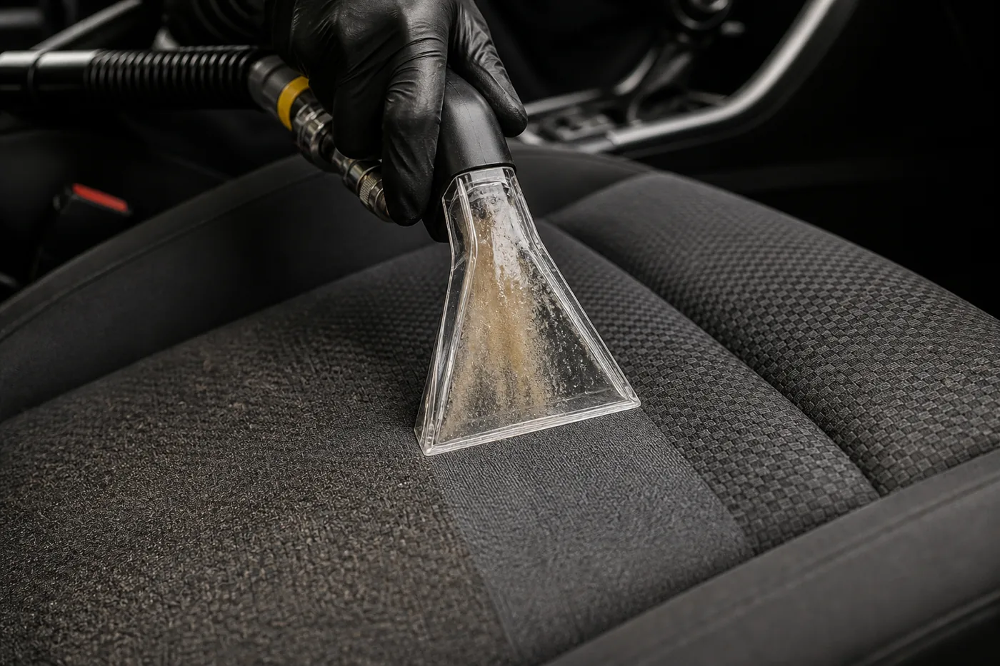

Lakier • zdjęcie demonstracyjne
Samochód po korekcie lakieru
Miejsce na prawdziwy efekt przed i po wykonaniu usługi.
Galeria jest przygotowana na prawdziwe zdjęcia aut obsłużonych przez CarLux wraz z zakresem wykonanych prac.
Miejsce na prawdziwy efekt przed i po wykonaniu usługi.

Miejsce na model auta i faktyczny zakres wykonanych prac.

Miejsce na zdjęcia wnętrza przed usługą i po odbiorze auta.

Miejsce na serię zdjęć: przed, proces i rezultat.
Tu pojawi się prawdziwa realizacja zabezpieczenia lakieru.
Tu pojawi się porównanie elementu przed i po naprawie.
Tu pojawi się auto przygotowane do zdjęć i oględzin.
W finalnej wersji znajdą się tu dwa zdjęcia tej samej części auta wykonane z identycznego kadru.
Miniatury można później połączyć z konkretnymi rolkami. Osadzenia warto ładować dopiero po kliknięciu, aby zachować szybkość strony.
Publiczny materiał CarLux zostanie osadzony po przygotowaniu miniatury.
Miejsce na materiał pokazujący proces czyszczenia i rezultat.
Miejsce na publiczny film z realizacji CarLux.